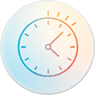
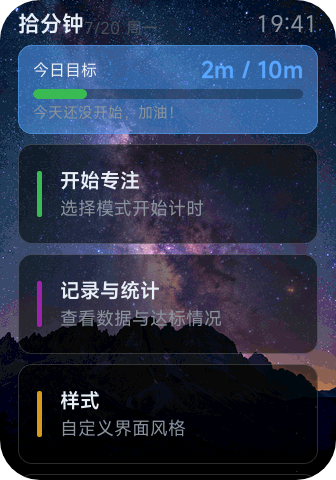
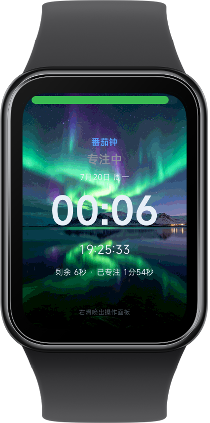
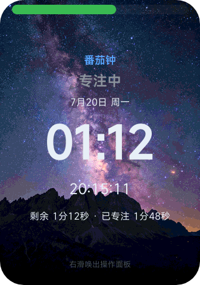
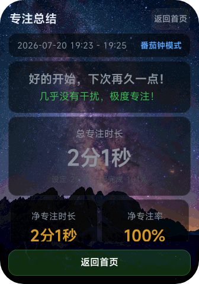
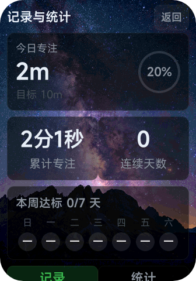
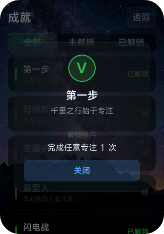
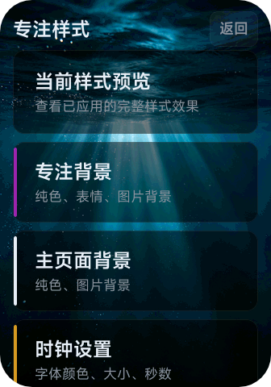
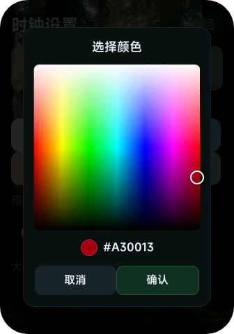
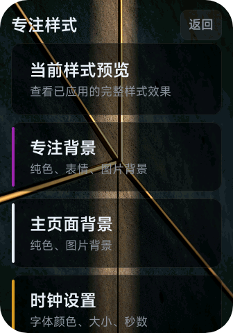

拾分钟
v2.0 · 小米手环专属效率工具
拾分钟是一款运行在小米手环上的专注效率工具。支持普通专注计时与番茄钟工作法，帮你充分利用每一分钟。
应用下载
RPK 安装包 · v1.0.2
安装方法：下载后通过
adb install 安装到手表
界面预览

主页面
今日目标与快捷入口

番茄钟专注
25分钟倒计时

专注计时
自由正计时模式

专注总结
完成评价与数据

专注统计
周/月数据一目了然

成就系统
25个成就等你解锁

样式定制
时钟/背景/进度条

时钟色盘
颜色自由搭配

专注样式
丰富主题选择
功能亮点
番茄钟模式
自定义专注/休息时间，自动轮换。净专注算法检测真实运动状态，划水会自动减速计时。
专注统计
自动记录每一次专注，日/周/累计数据一目了然。支持日历视图和趋势图表，帮你持续进步。
普通专注
自由正计时，无时长限制。支持暂停和结束总结，适合任意时长的专注场景。
成就系统
25个成就等你解锁
样式定制
时钟/背景/进度条
净专注算法
运动检测防划水
省电模式
静止简化显示
更新日志
v2.0.0
2026-07
全新样式定制系统 · 专注统计全面升级 · 成就系统重做
v1.0.0
2026-06
首次发布 · 普通专注 + 番茄钟模式 · 净专注算法